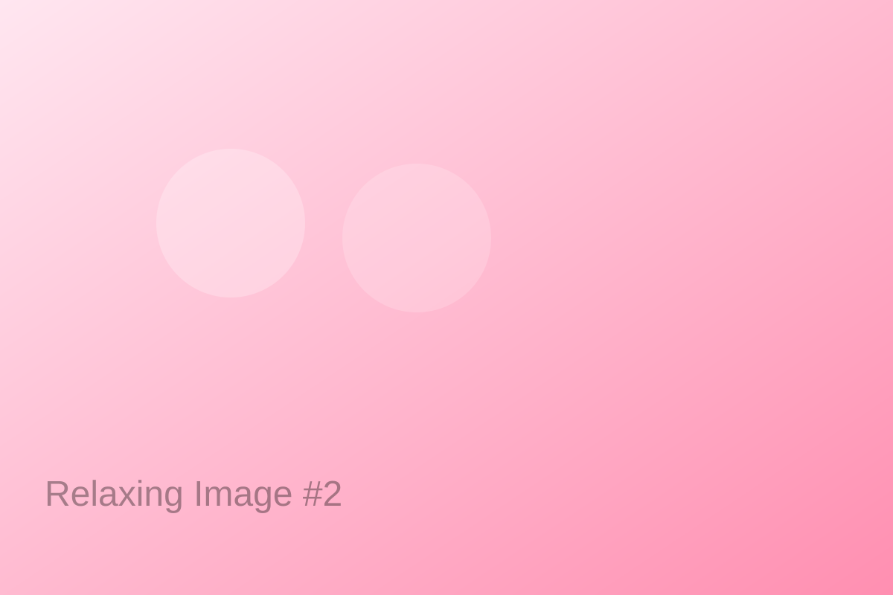
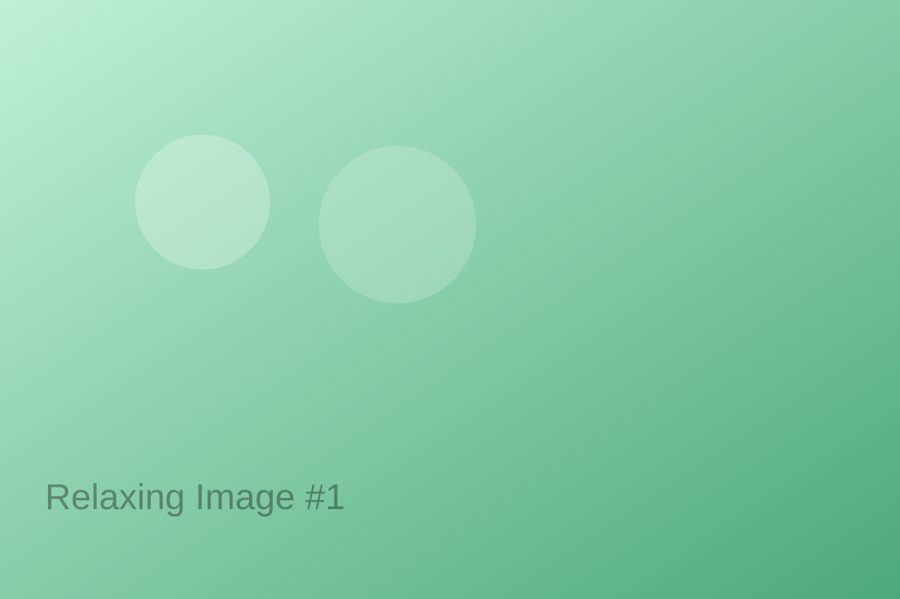
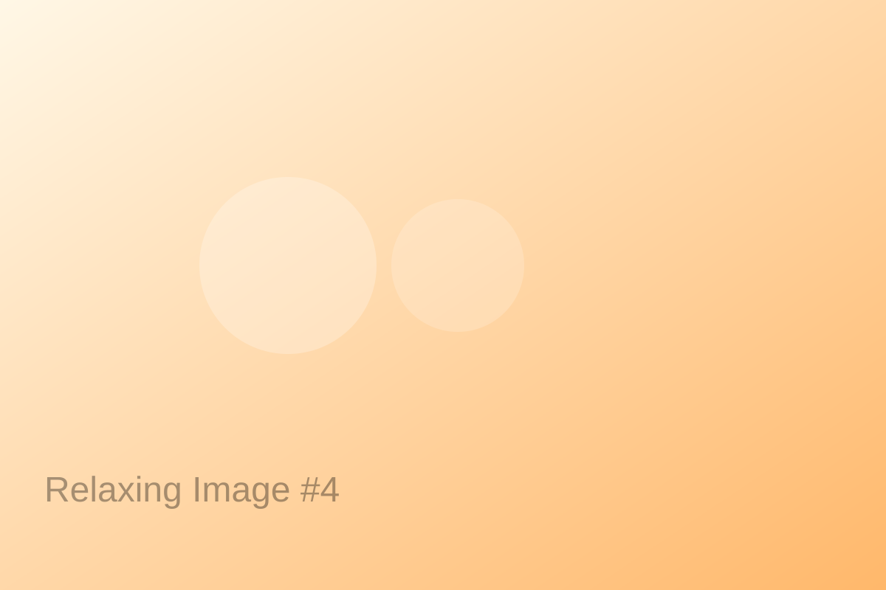

Resources / संसाधन
Meditation Guides / ध्यान मार्गदर्शिका
Simple, bilingual scripts to practice mindfulness anywhere. / कहीं भी माइंडफुलनेस का अभ्यास करने हेतु सरल द्विभाषी स्क्रिप्ट।
Box Breathing (4-4-6)
Inhale 4 • Hold 4 • Exhale 6 for 10 rounds. / 4 सेकंड सांस लें • 4 रोकें • 6 छोड़ें, 10 राउंड।
Body Scan
Notice sensations from toes to head; soften any tension. / पैर से सिर तक संवेदनाएँ देखें।
Audio / ऑडियो
Videos / वीडियो
Self-help Guides / स्व‑सहायता गाइड
1) How to control stress / तनाव कैसे नियंत्रित करें
- Identify triggers; write them down.
- Use the 20‑minute rule: short focused work + short break.
- Movement snack: 30–60 sec stretches every hour.
- Hydration + balanced meals.

2) Managing anxiety / चिंता प्रबंधन
- Grounding 5‑4‑3‑2‑1 (see, feel, hear, smell, taste).
- Slow breathing 4‑4‑6.
- Limit caffeine and doom‑scrolling.
- Talk to a friend or counselor.

3) Avoiding harmful situations / खराब स्थितियों से बचना
- HALT check: Hungry, Angry, Lonely, Tired.
- Boundaries: say no where needed.
- Safe peer circle; share live location when meeting new people.
4) Daily mental fitness / रोज़ाना मानसिक फिटनेस
- 10‑minute walk in daylight.
- 5 good things journal.
- 8‑hour sleep routine.
- Acts of kindness.

These guides are educational and not a substitute for professional care. / ये गाइड शैक्षिक हैं और चिकित्सा का विकल्प नहीं।